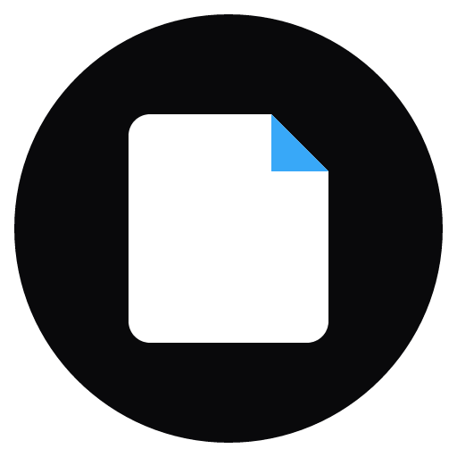

天空站与机械鸟
在云上的车站，遇见一只小小的机械鸟。
下载示例 CBZ ↓
Moyu选择一本示例漫画，再切换阅读布局。
在阅读区域使用左右方向键翻页；条漫模式连续滚动。
桌面应用开发版截图；使用隔离书库和 AI 生成的示例漫画。
AI 生成的原创演示素材，适合用来体验本地阅读。
在云上的车站，遇见一只小小的机械鸟。
下载示例 CBZ ↓一杯咖啡里，藏着一朵等雨停的小云。
下载示例 CBZ ↓星空下，一位机械师与她的小小伙伴。
下载示例 CBZ ↓宇航员与维修机器人在冰原上重启失联的科研站。
下载示例 CBZ ↓示例用于演示阅读，多页漫画不代表超长图切片测试。应用本身不内置在线漫画源。